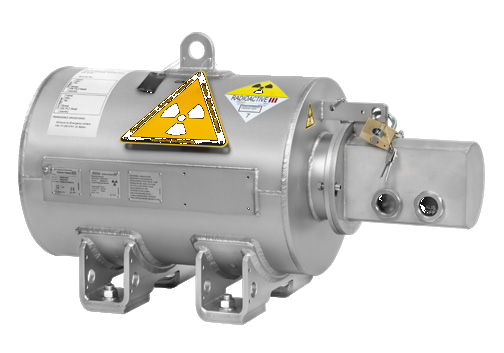
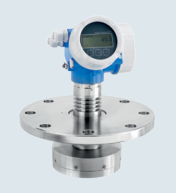
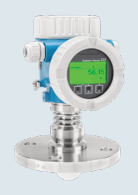

Fast Group Engineering cung cấp đo mức bức xạ gamma FMG50 Endress+Hauser chính hãng tại Việt Nam — đầy đủ chứng từ nhập khẩu, CO/CQ và bảo hành chính hãng.



Liên kết nên mở tiếp
Có những bồn mà không một thiết bị nào được phép chạm vào môi chất bên trong: bình phản ứng áp suất cao có lớp lót chống ăn mòn không thể khoan thêm nozzle, môi chất ăn mòn/độc/mài mòn cực mạnh, hoặc nhiệt độ vượt mọi vật liệu tiếp xúc. Khi mọi công nghệ khác "bó tay", Gammapilot FMG50 đo mức bằng bức xạ gamma từ hoàn toàn bên ngoài thành bồn — không xâm nhập, không tiếp xúc, không cần khoan mở bồn.
Nguyên lý bức xạ & khi nào buộc phải dùng gamma
Một nguồn phóng xạ (thường Cs-137 hoặc Co-60) đặt một bên thành bồn, đầu dò FMG50 đặt phía đối diện. Chùm gamma xuyên qua bồn bị vật chất bên trong hấp thụ; mức chất càng cao thì bức xạ tới đầu dò càng yếu. Từ cường độ nhận được, FMG50 suy ra mức, điểm mức, mật độ hoặc interface. Vì cả nguồn và đầu dò đều nằm ngoài bồn, phép đo hoàn toàn không xâm nhập.
Đây không phải lựa chọn đầu tiên, mà là giải pháp cuối cùng khi:
- Bồn/bình không thể khoan thêm cửa (bình lót gạch chịu lửa, bình phản ứng áp cao).
- Môi chất quá ăn mòn/độc/mài mòn cho mọi cảm biến tiếp xúc.
- Điều kiện quá khắc nghiệt (nhiệt/áp) vượt giới hạn radar/GWR.
- Cần đo qua thành bồn dày mà không dừng sản xuất để lắp đặt.
Thông số kỹ thuật quan trọng (theo tài liệu)
| Hạng mục | Giá trị (theo catalog/TI) |
|---|---|
| Nguyên lý | Bức xạ gamma (radiometric), không tiếp xúc |
| Đại lượng đo | Mức / điểm mức / mật độ / interface |
| Lắp đặt | Bên ngoài thành bồn (clamp/bracket) |
| Tiếp xúc môi chất | Không (non-invasive) |
| Tín hiệu / truyền thông | 4-20 mA HART / PROFIBUS PA / FOUNDATION Fieldbus |
| An toàn | SIL; phê duyệt Ex vùng |
| Phụ kiện | Gamma Modulator FHG65, hộp chứa nguồn FQG60 |
Lưu ý biên tập: cấu hình nguồn phóng xạ, hoạt độ, che chắn và toàn bộ khía cạnh an toàn bức xạ phải tuân thủ quy định pháp lý về nguồn phóng xạ tại Việt Nam (cấp phép, khai báo, kiểm soát). BẮT BUỘC làm việc với đơn vị được cấp phép và đối chiếu TI theo mã đặt hàng — không tự ý triển khai.
Đặc trưng lớn nhất về TCO là FMG50 không có bộ phận tiếp xúc để hao mòn, gần như không bảo trì phần cảm biến. Đánh đổi là gánh nặng pháp lý và an toàn của việc quản lý nguồn phóng xạ.
An toàn bức xạ & cấp phép — phần không thể bỏ qua
Đây là điểm khác biệt căn bản so với mọi thiết bị đo mức khác. Triển khai FMG50 kéo theo:
- Cấp phép nguồn phóng xạ: khai báo, xin phép cơ quan quản lý an toàn bức xạ theo quy định hiện hành.
- Che chắn & kiểm soát liều: nguồn đặt trong hộp chứa (FQG60) có màn trập; khu vực phải kiểm soát và giám sát liều.
- Nhân sự được đào tạo: vận hành, bảo trì và thải bỏ nguồn phải theo quy trình an toàn bức xạ.
- Vòng đời nguồn: nguồn có chu kỳ bán rã; phải có kế hoạch thay/thải bỏ đúng quy định.
Không nên xem đây là "thiết bị đo" đơn thuần — đó là hệ thống có nguồn phóng xạ cần quản lý suốt vòng đời.
Ưu điểm, hạn chế, khi nào KHÔNG dùng
Ưu điểm: đo được nơi mọi công nghệ khác thất bại; hoàn toàn không tiếp xúc/không xâm nhập; lắp đặt không cần dừng bồn/khoan mở; gần như không bảo trì phần cảm biến; đo được cả mức, mật độ và interface.
Hạn chế / không phù hợp: chi phí đầu tư và pháp lý cao; gánh nặng an toàn bức xạ và cấp phép; không dùng khi các công nghệ thông thường (radar, GWR, chênh áp) vẫn đáp ứng được. Gamma chỉ nên dùng khi thực sự không còn lựa chọn khác.
Hiệu quả kinh tế (TCO)
Bài toán TCO của FMG50 rất khác các thiết bị khác. Chi phí thiết bị và cấp phép ban đầu cao, nhưng ở những bình phản ứng mà việc dừng sản xuất để lắp cảm biến tiếp xúc tốn kém khủng khiếp — hoặc đơn giản là bất khả thi — thì gamma là con đường duy nhất giữ được phép đo liên tục. Khi đó, giá trị của nó đo bằng khả năng vận hành an toàn liên tục, không phải bằng giá cảm biến.
FastGroup hỗ trợ gì
FastGroup cung cấp thiết bị Endress+Hauser chính hãng tại Việt Nam. Với Gammapilot FMG50, chúng tôi hỗ trợ: tư vấn đánh giá xem gamma có thực sự cần thiết hay còn giải pháp khác, đối chiếu datasheet TI theo mã đặt hàng, kết nối quy trình cấp phép/an toàn bức xạ với đơn vị chức năng, hỗ trợ nhập khẩu và cung cấp CO/CQ theo từng đơn hàng, hỗ trợ kỹ thuật triển khai.
Kết luận & liên hệ
Cho những bồn không thể lắp cảm biến từ bên trong, Gammapilot FMG50 là giải pháp đo mức bức xạ gamma không tiếp xúc cuối cùng nhưng đáng tin. Để đánh giá tính cần thiết, chuẩn bị hồ sơ an toàn bức xạ và nhận báo giá chính hãng, liên hệ FastGroup để được tư vấn chuyên sâu.
Câu hỏi thường gặp (FAQ)
1. Khi nào buộc phải dùng gamma? Khi không thể khoan/lắp cảm biến tiếp xúc và các công nghệ không tiếp xúc khác (radar) cũng không đáp ứng — ví dụ bình lót chịu lửa, môi chất cực ăn mòn.
2. Có an toàn không? An toàn nếu tuân thủ đầy đủ quy định về nguồn phóng xạ: che chắn, kiểm soát liều, nhân sự được đào tạo và cấp phép.
3. Cần giấy phép gì? Phải cấp phép/khai báo nguồn phóng xạ theo quy định Việt Nam — làm việc với đơn vị được cấp phép.
4. Bảo trì thế nào? Phần đầu dò gần như không bảo trì; trọng tâm là quản lý an toàn nguồn phóng xạ suốt vòng đời.
5. Có giải pháp thay thế rẻ hơn không? Nếu radar/GWR/chênh áp còn đáp ứng thì luôn ưu tiên chúng — gamma chỉ dùng khi không còn lựa chọn.
Nguồn tham khảo
- Endress+Hauser – Level measurement overview (FA00001F00EN2726)
- Endress+Hauser – Technical Information (TI) Gammapilot FMG50, endress.com (đối chiếu theo mã đặt hàng)
- Quy định pháp luật Việt Nam về an toàn bức xạ và nguồn phóng xạ (đối chiếu với cơ quan quản lý)
Nhận báo giá Endress+Hauser chính hãng
Gửi mã model, điều kiện quá trình, kết nối và yêu cầu chứng nhận qua email minhduc@fastgroup.vn hoặc Zalo/điện thoại (+84) 938 888 958. Hoặc gửi RFQ qua biểu mẫu và tra mã model trực tiếp trên trang.